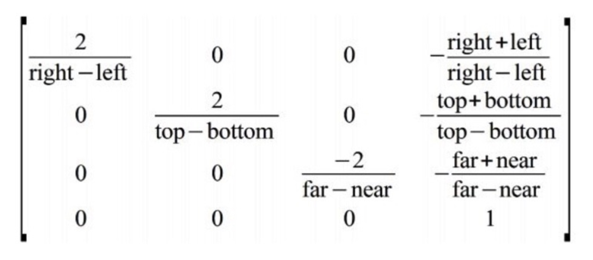
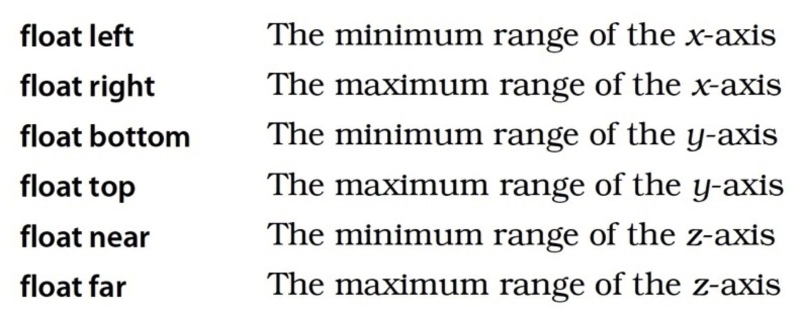
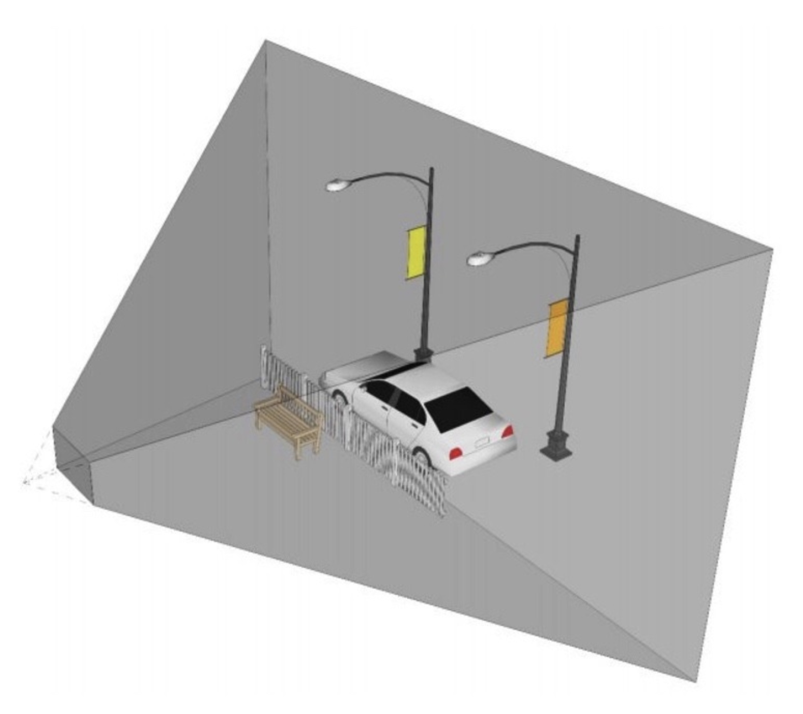
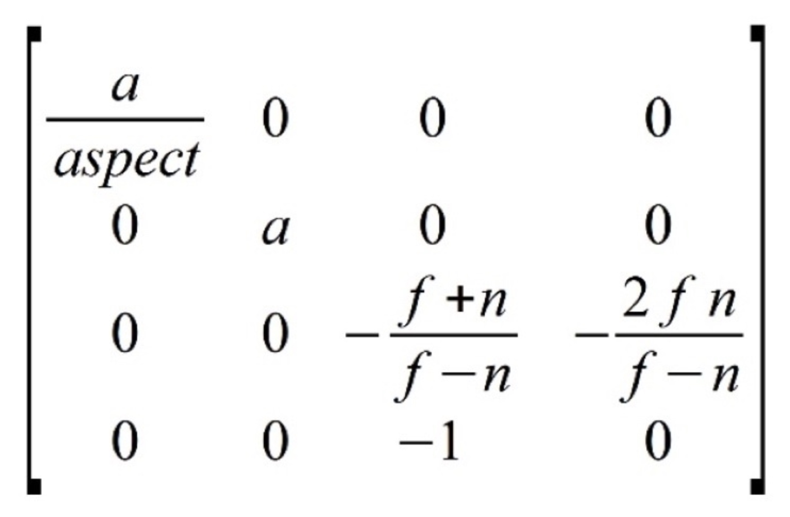
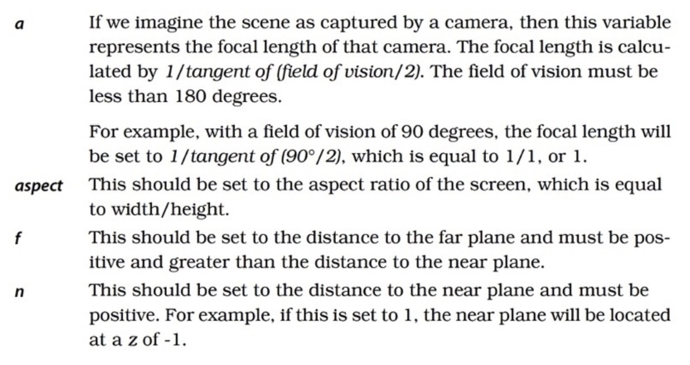
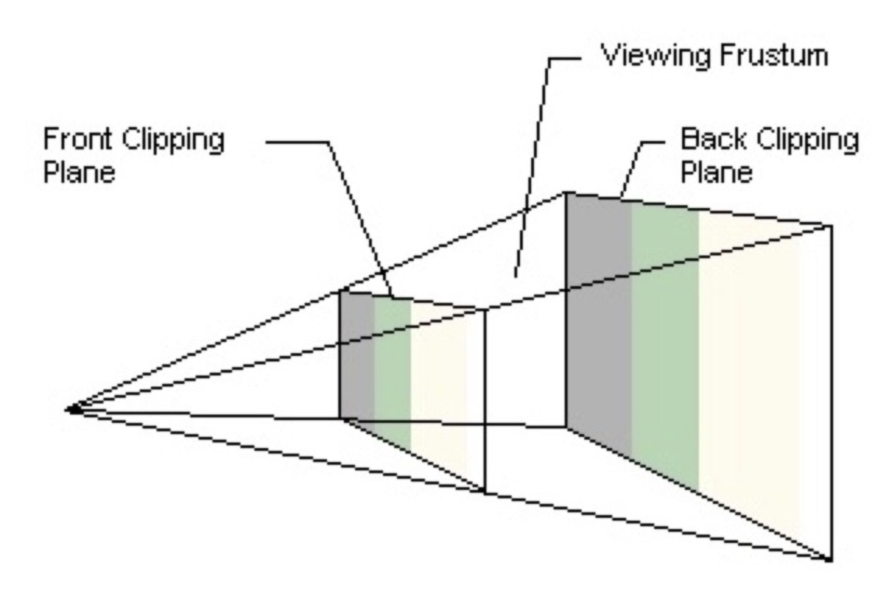

OpenGL中投影变换矩阵的数学推导
在OpenGL中有两个重要的投影变换：正交投影(Orthographic Projection)和透视投影(Perspective Projection)，二者各有对应的变换矩阵。初学者比较难理解这两个矩阵是怎么来的。本文从数学角度来推导两个投影矩阵。
推导的思路
正交投影和透视投影的作用都是把用户坐标映射到OpenGL的可视区域。如果我们能根据二者的变换矩阵来推出最终经过映射的坐标范围恰好是OpenGL的可视区域，也就是反向推导出了这两个投影矩阵。
OpenGL的可视区域的坐标范围是一个边长为2的立方体。每个维度上的大小是2，范围是[-1,+1]。经过各种变换之后的坐标超出[-1,+1]范围的部分将不会显示到屏幕上。
正交投影
变换效果
正交投影在OpenGL中的作用是调整屏幕宽高比，并将实际定义的坐标转换成[-1,+1]范围内的对应的坐标。
矩阵定义
下图是正交投影矩阵。

参数解释如下：

只考虑x轴和y轴，则：
在定义物体的坐标的时候，坐标范围为：
$$\begin{cases}
x \in [left, right]& \text{}\
y \in [top, bottom]& \text{}
\end{cases}$$
通过上面那个矩阵，就可以转换成[-1,+1]范围内的对应的坐标。下面对此进行证明。
数学推导
① 假设物体上的一个坐标为(x,y,z,1)，其中，x的范围为[left, right]，y的范围为[top, bottom]，z的范围为[near, far]。
则，矩阵*向量
$$
\left[ \begin{array}{cccc}
\frac{2}{right-left} & 0 & 0 & -\frac{right+left}{right-left}\
0 & \frac{2}{top-bottom} & 0 & -\frac{top+bottom}{top-bottom}\
0 & 0 & \frac{-2}{far-near} & -\frac{far+near}{far-near}\
0 & 0 & 0 & 1
\end{array}
\right]×
\left[ \begin{array}{c}
x\
y\
z\
1
\end{array}
\right]=
\left[ \begin{array}{c}
\frac{2x-left-right}{right-left}\
\frac{2y-top-bottom}{bottom-top}\
\frac{2z-near-far}{far-near}\
1
\end{array}
\right ]
$$
即，
$$x1=\frac{2x-left-right}{right-left}$$
$$y1=\frac{2y-top-bottom}{bottom-top}$$
$$z1=\frac{2z-near-far}{far-near}$$
$$w1=1$$
② 考虑到perspective divide的存在，此时w=1，所以：
$$x1=\frac{2x-left-right}{(right-left)w1}=\frac{2x-left-right}{right-left}$$
$$y1=\frac{2y-top-bottom}{(bottom-top)w1}=\frac{2y-top-bottom}{bottom-top}$$
$$z1=\frac{2z-near-far}{(far-near)w1}=\frac{2z-near-far}{far-near}$$
② 先证明x轴确实落在了[-1, +1]的范围。
很明显，x1是关于x的一元一次线性函数。
$$x1=f(x)=\frac{2*x-left-right}{right-left}$$
所以x=right的时候，f(x)最大，x=left的时候，f(x)最小。
代入方程，得到：
$$f(x)=\begin{cases}
f(x) = -1,& \text{x=left}\
f(x) = 1,& \text{x=right}
\end{cases}$$
③ 所以
$$x1=f(x)\in [-1, +1]$$
同理，y1和z1的范围也是[-1, +1]。
证明结束。
小结
正交变换是将物体的坐标转换成OpenGL的坐标。
变换前的范围为：
$$\begin{cases}
x \in [left, right],& \text{}\
y \in [bottom, top],& \text{}\
z \in [near, far],& \text{}
\end{cases}$$
变换后的范围为：
$$\begin{cases}
x \in [-1, 1],& \text{}\
y \in [-1, 1],& \text{}\
z \in [-1, 1],& \text{}
\end{cases}$$
透视投影
变换效果
在用2D屏幕展现3D场景时，会有一种近大远小的感觉。OpenGL也是利用这一原理实现在2D屏幕上的3D效果。透视投影会形成一个视椎体，在视椎体内的坐标都是可以绘制到屏幕上的，也就是说，在视椎体上的坐标范围都会被调整到[-1, +1]的区间。

矩阵定义

参数解释如下：

透视矩阵有些特殊，并未说明x和y的范围，下面通过推导得出这个范围。
数学推导
① 假设物体上的一个坐标为(x,y,z,1)。
则，矩阵*向量的结果为：
$$
\left[ \begin{array}{cccc}
\frac{a}{aspect} & 0 & 0 & 0\
0 & a & 0 & 0\
0 & 0 & -\frac{f+n}{f-n} & -\frac{2fn}{f-n}\
0 & 0 & -1 & 0
\end{array}
\right]×
\left[ \begin{array}{c}
x\
y\
z\
1
\end{array}
\right]=
\left[ \begin{array}{c}
\frac{ax}{aspect}\
ay\
-\frac{f+n+2fnw}{f-n}\
-z
\end{array}
\right ]
$$
即，
$$x1=\frac{ax}{aspect}$$
$$y1=ay$$
$$z1=-\frac{(f+n)z+2fnw}{f-n}$$
$$w1=-z$$
② 考虑perspective divide的存在，得到:
$$x2=\frac{x1}{w1}=\frac{-ax}{aspect * z}$$
$$y2=\frac{y1}{w1}=-\frac{ay}{z}$$
$$z2=\frac{z1}{w1}=\frac{(f+n)z+2fn}{(f-n)z}$$
③ 求：当结果落在了[-1, +1]的范围的时候，x的范围是多少？
很明显，x2是关于x的一元一次线性函数。
$$x2=f(x)=\frac{-ax}{aspect*z}$$
下面推算当x2的范围为[-1, +1]的时候，x的范围
$$x=\begin{cases}
\frac{aspectz}{a},& \text{f(x)=-1}\
-\frac{aspectz}{a},& \text{f(x)=1}
\end{cases}$$
所以，x的范围为
$$[\frac{aspectz}{a},-\frac{aspectz}{a}]$$
这里注意，按照习惯，z一般都是负数，所以上面的区间范围是没问题的，下同。
④ 求：当结果落在了[-1, +1]的范围的时候，y的范围是多少？
因为，
$$y2=f(y)=-\frac{ay}{z}$$
分别求y1为1和-1时，y的值。
$$y=\begin{cases}
\frac{z}{a},& \text{f(y)=-1}\
-\frac{z}{a},& \text{f(y)=1}
\end{cases}$$
所以，y的范围为
$$[\frac{z}{a},-\frac{z}{a}]$$
⑤ 求：当结果落在了[-1, +1]的范围的时候，z的范围是多少？
因为，
$$z2=f(z)=\frac{z1}{w1}=\frac{(f+n)z+2fn}{(f-n)z}$$
令
$$-1<=f(z)<=1$$
则有，
$$-1<=\frac{(f+n)z+2fn}{(f-n)z}<=1$$
解方程得，
$$-1<=f(z)<=1$$
所以，
$$n<=z<=f$$
即变换前的坐标一定要在平截椎体的Z轴范围内才能最终展示到屏幕上。
证明结束。
小结
透视变换是将物体的坐标转换成OpenGL的坐标。
变换前的范围为：
$$\begin{cases}
x \in [\frac{aspectz}{a},-\frac{aspectz}{a}],& \text{}\
y \in [\frac{z}{a},-\frac{z}{a}],& \text{}\
z \in [n,f],& \text{}
\end{cases}$$
变换后的范围为：
$$\begin{cases}
x \in [-1, 1],& \text{}\
y \in [-1, 1],& \text{}\
z \in [-1, 1],& \text{}
\end{cases}$$
附上透视椎体的图解：

总结
矩阵变换在OpenGL坐标变换中起到了非常重要的作用。在二维图像显示时一般使用正交变换，在三维图像显示时就要用到透视变换。只有真正理解了这两个变换对应的矩阵的作用和原理，才能对OpenGL矩阵变换理解的更透彻，在遇到问题的时候才能找到问题的根本。
最后来总结下本文的结论。
正交变换
变换前的范围为：
$$\begin{cases}
x \in [left, right],& \text{}\
y \in [bottom, top],& \text{}\
z \in [near, far],& \text{}
\end{cases}$$
变换后的范围为：
$$\begin{cases}
x \in [-1, 1],& \text{}\
y \in [-1, 1],& \text{}\
z \in [-1, 1],& \text{}
\end{cases}$$
透视变换
变换前的范围为：
$$\begin{cases}
x \in [\frac{aspectz}{a},-\frac{aspectz}{a}],& \text{}\
y \in [\frac{z}{a},-\frac{z}{a}],& \text{}\
z \in [n,f],& \text{}
\end{cases}$$
变换后的范围为：
$$\begin{cases}
x \in [-1, 1],& \text{}\
y \in [-1, 1],& \text{}\
z \in [-1, 1],& \text{}
\end{cases}$$
转载请注明出处：OpenGL中投影变换矩阵的数学推导 - 专业点
欢迎关注我的公众号

推荐

公众号推荐
欢迎关注我的公众号一起愉快的交流。